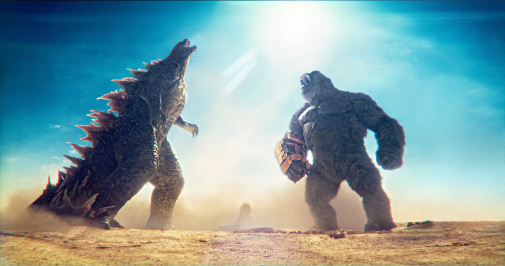

Riview Film Godzilla X Kong: The New Empire
30 Mei 2024
Hollow Earth yang kita lihat sebelumnya di Godzilla vs. Kong ternyata masih hanya sebatas kulitnya saja, loh. Nah, Godzilla x Kong mengajak penontonnya untuk menyelami lebih dalam Hollow Earth yang ternyata menyimpan lebih banyak tempat yang belum dijelajahi di film sebelumnya. Ada tempat baru yang terlihat begitu indah, tetapi ada juga sisi gelap dari Hollow Earth yang akhirnya terungkap di film ini. Jika kita kilas balik ke Godzilla vs. Kong, film ini lebih fokus memperlihatkan pertarungan antara Godzilla dan Kong, kemudian kerja sama mereka dalam melawan Mechagodzilla, sehingga tidak banyak monster lain yang ditampilkan. Nah, Godzilla x Kong hadir dengan lebih banyak monster, baik di permukaan Bumi dan di Hollow Earth. Film ini semakin mempertegas nama semesta mereka, yaitu MonsterVerse, yang mana Bumi sebenarnya dihuni oleh banyak Titan. Godzilla x Kong jelas menjadi jawaban buat kamu yang ingin menonton film monster yang ceritanya fokus pada monsternya, bukan kepada manusianya. Jika dalam bentuk persentase, kisah monsternya ada sekitar 60%, sedangkan kisah manusianya ada sekitar 40%. Kisah manusianya hadir untuk melengkapi kisah monsternya. Namun, sutradara Adam Wingard dan tim penulis naskahnya juga tidak lupa menambahkan kisah menyentuh dari sisi manusianya, khususnya hubungan ibu-anak antara Ilene Andrews dan Jia. Untuk masalah adegan pertarungannya, sudah tidak ada yang perlu diragukan lagi karena sutradara Wingard berhasil lagi menghadirkan pertarungan monster yang begitu epic. Namun di antara semuanya, ada satu momen yang cukup berkesan bagi saya, yaitu ketika Kong bertemu dengan sang villain utama, yaitu Scar King. Tidak ada dialog yang terucap di antara semua monster yang ada di momen tersebut. Namun, penonton bisa dibuat mengerti dengan komunikasi mereka yang mengandalkan isyarat..